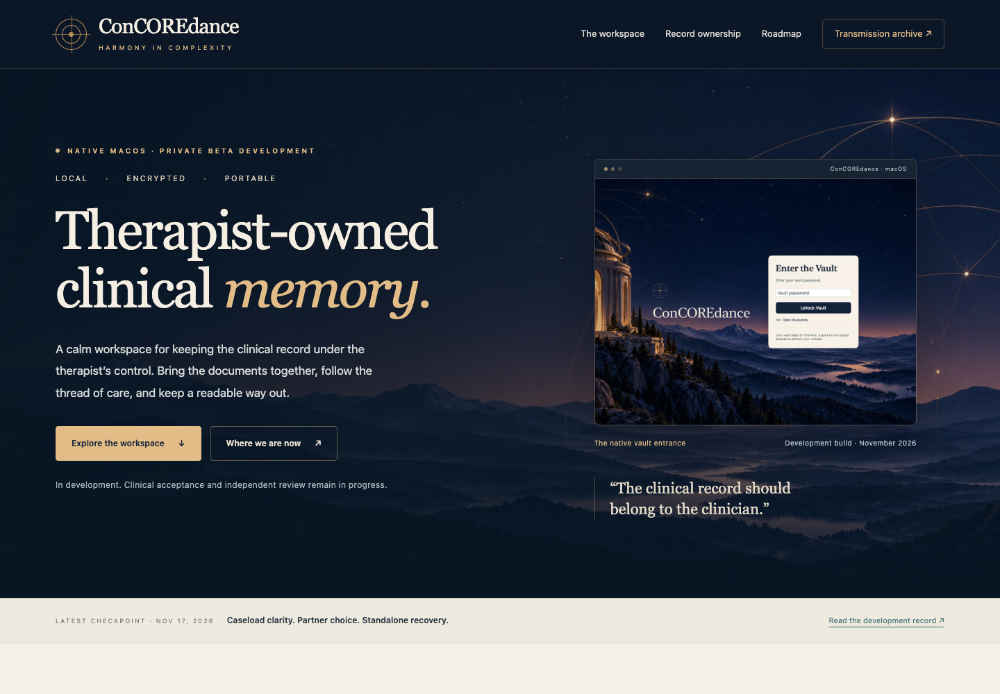

Public Homepage and Roadmap Aligned with the Native Application
At Brandon Hatfield, LPC's request, the public homepage and roadmap were updated alongside the missing November 14–17 project transmissions. The public implementation is preserved in archive source commit 0ef36cacca3b599843b5df32c00eaf39d4932fbc. The current private application source remains separate; this publication does not distribute it.
The homepage reuses approved native landscape artwork, the established concentric sigil, restrained bronze accents, deep navigation and warm readable surfaces. Current native vault, caseload and finalized-note images replace the older concepts as the main product presentation. Every displayed clinical record and the note signature are synthetic. Earlier artwork, mockups and historical transmissions remain preserved in the visual library and archive.
The page explains the implemented record workflow, therapist authorship, editable partner choice and portable exits. Its development status remains explicit. A test count is presented with its scope and skips, not as a safety or clinical-release certification. No invented testimonials, customer counts, sign-up flow or download availability were added.
The new public roadmap separates implemented development capabilities, open beta acceptance gates and future direction. The older product page's inline roadmap was also reconciled so it no longer describes already implemented templates and backup workflows as merely next or planned. Partner-specific documentation profiles, historical service attribution, shared-practice identities, broader integrations and configurable backup destinations remain future work.
Backup status was checked against the owning app source after the owner asked for clarification. Exported encrypted .ccbackup files currently write locally to Downloads, while format-update recovery copies remain local beside the vault. Automatic Google Drive backup/upload or sync confirmation is not implemented. The older optional-Drive wording was corrected; manually moving an encrypted file to Drive is an external step, not a verified automatic integration.
The earlier public archive route, /01_Transmission_Archive/, was observed returning a missing page after the legacy domain forwarded it to the main domain. A static compatibility route now takes browser visitors to /archive/ without moving the canonical archive or changing hosting. The existing GitHub Pages domain and repository remain in use.
Local browser checks covered the homepage at 320, 390, 1024 and 1440 pixels with no horizontal overflow, and the roadmap at mobile and desktop sizes. The mobile menu opens, its Roadmap link navigates, and Escape closes it and returns focus. Native image links and page/fragment targets were checked; the legacy route reached the archive. JavaScript syntax and public-content scans were checked. Existing full PNG renders are retained, with smaller JPEG presentation images used for the photographic hero and vault preview.
These are public-site checks, not a rerun of app tests or completion of native clinical acceptance. Deployment readback is verified separately after the archive commits are pushed. Clinical data, private local paths, passwords, personal clinician imagery and signing material are excluded from this publication.
Decisions
- Reuse the approved application visual language and real synthetic native renders.
- Keep implementation, acceptance and future direction visibly distinct.
- State that current backups are local and automatic Google Drive backup remains planned.
- Preserve historical assets and repair the legacy archive route.
- Keep public website source separate from private clinical application source.
Next Actions
- Keep the public roadmap aligned with evidence-backed application milestones.
- Continue the native beta acceptance and independent-review work recorded in the November 17 app transmission.
- Design configurable backup destinations with explicit copy/upload confirmation and recovery verification before claiming cloud backup.
